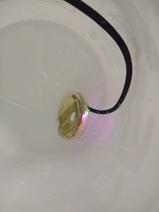
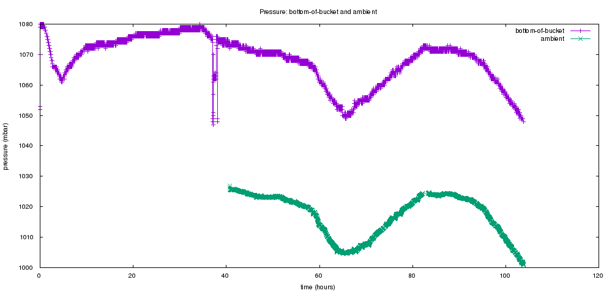
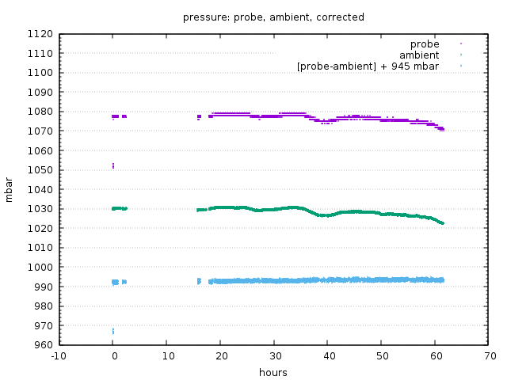
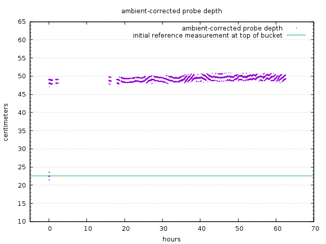
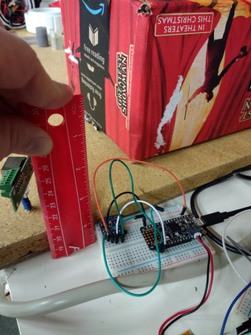
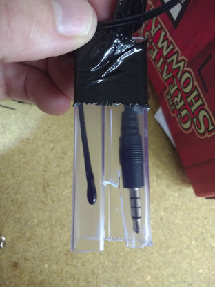
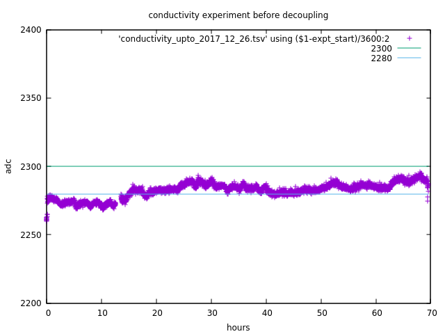
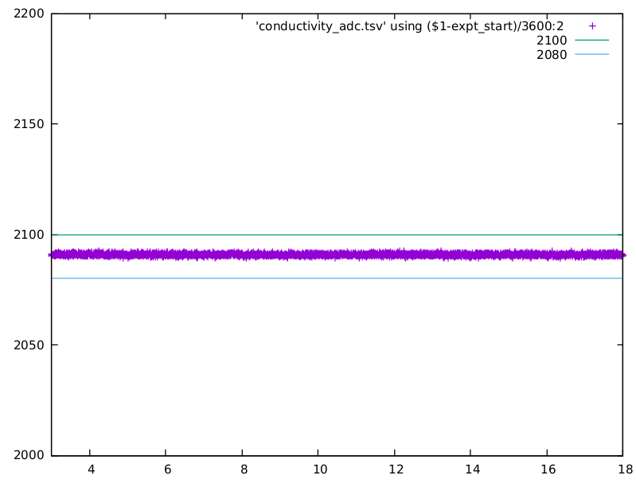
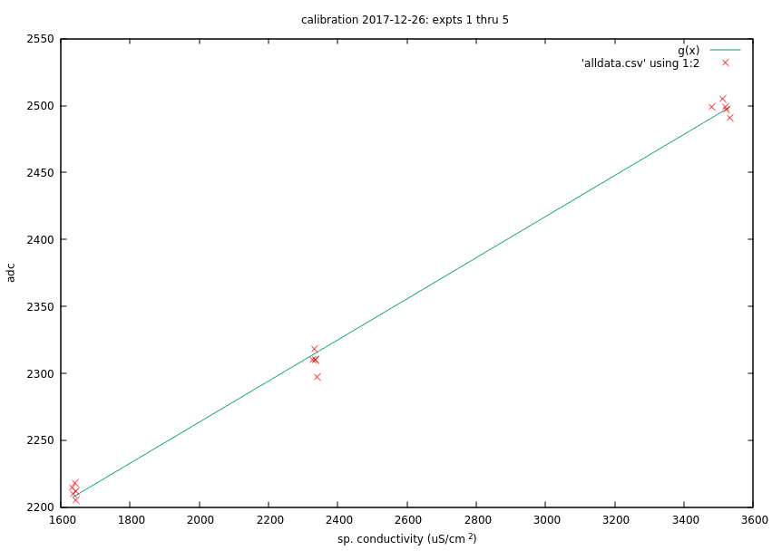

[Notes written up Dec 29, 2017]

We're currently in possession of the Blue Robotics pressure sensor useful for the 300 m depth range [REF].
The datasheet for this sensor [REF] indicates that it has an 'absolute accuracy' of +/- 50 mbar.
But: what does this mean?
Does this mean that the reading will drift +/- 50 mbar, over time?
It doesn't seem so -- because there is a separate figure quoted in the datasheet for how much drift to expect over time.
If, as seems reasonable, the sensor's pressure reading might be 'off' by a fixed amount within the range of +/- 50 mbar, then that 'offset' can be compensated for by simply 'zeroing' the sensor at an initial water depth and making measurements relative to that initial value.
Such a 'zeroing' procedure is easy to do, and needs to be done anyway for any deployment.
So: the important questions seem to be:
The first thing to do was to simply place the depth sensor in a bucket.
After a very brief (a minute or so) placement of the sensor at the top of the bucket, it was plunged into the bucket.
Here are the results of about 100 hours of measurement:

Notes:
For the first few minutes, the sensor puck was placed above the bucket. This corresponds to the datapoints that can barely be seen at t=0, around 1053 mbar.
The sensor is then placed at the bottom of the bucket (full of water), bringing the reading up to 1080 mbar.
There is an initial rapid decay in sensor reading, which might be due to the pressure sensor being used for the first time -- or to e.g. an air bubble.
Then, after about t=3 hours, the pressure sensor seems to start drifting.
At about t=39 hours, the sensor was removed from the bucket, and then placed at a half-bucket position for an hour or two, before being replaced at the bottom of the bucket.
The sensor continues to drift, through a pressure range greater than the initial pressure difference between top- and bottom-of-bucket.
At t=40 hours, we start tracking ambient pressure, as well.
We notice that the qualitative behavior and absolute difference in pressure values track very well across both the ambient and water probe pressure values.
Correcting the intial experiment was inconvenient -- two separate data streams were collected, resulting in timestamps that different slightly between the two signals. So, data capture was consolidated, aligning timestamps, facilitating ambient pressure compensation.
This resulted in the following data (generated by the script 'gnuplot -p pressure_corrected_progress.s')

Notes:
The water probe (purple) was initially placed above the bucket, resulting in a pressure of about t=1052 mbar at t=0 hours.
The water probe then jumps up to about 1078 mbar.
There is a gap in the data from t=2 hours to about t=16 hours (fiddling with data capture infrastructure).
Then we see that the water probe reading drifts over the next 40 hours from about 1080 mbar down to 1070 mbar. For tap water (assumed density 997 kg/m^3), this represents a depth change of about 10 centimeters.
Meanwhile, the ambient pressure (green) shows a similar behavior, and drift, over the same period.
By subtracting the ambient pressure from the probe pressure (and adding a pressure value simply to shift the result up visually for easy trend comparison), a relatively stable pressure reading result.
By assuming a water density value (of 997 kg/m^3), we can then convert this corrected pressure value to a depth reading (generated by gnuplot -p depth_corrected_progress.s):

Note that the apparent fluctuation of approximately 2 centimers may be due to the sensor, but also may be due to due to:
Evaporation of water from the bucket over 70 hours
Movement of the setup over the course of the 70 hour experiment. The bucket was moved, resulting in reorientation of the sensor puck within the bucket -- which could easily have changed the sensor depth by 2 cm or more.
Potential movement of the ambient pressure sensor. It was located on one of two nearby surfaces, which differ by more than 2 centimeters ...

In order to more precisely assess the behavior of the pressure sensor, we will need to:

Conductivity measurements were made with an audio jack probe. Initial tests indicated odd, periodic noise in the signal:

Various strategies for reducing noise were applied to the setup:
Which nevertheless did not mitigate the drift.
Ultimately, the most significant source of drift seemed to be due to electrical coupling with 'house power', which had significant noise.
The setup was then placed on battery power, and data was transmitted over radio. This resulted in a significant reduction in noise, resulting in a very stable conductivity signal:

The effective ADC resolution for this setup was about 1000 counts (the ADC could in principle range from "zero conductivity" at ~ 2000 ADU, to "maximum conductivity" at ~ 3000 ADU). The standard deviation over about 13 hours was ~ 0.5 ADU -- resulting in an error bar of about 0.05% of the effective measurement resolution.
The conductivity sensor was then calibrated using solutions at 1413 uS/cm, 2000 uS/cm, and 3000 uS/cm:

The green line above is a linear fit via gnuplot of the form y=m*x+b, where:
b = 0.15355 +/- 0.002673 (1.741%)
c = 1956.42 +/- 6.986 (0.3571%)
Roughly, this seems to correspond to an anticipated error of around 7 uS/cm for conductivities around 2000 uS/cm, or about 0.4 % of the measurement value.
The probe circuitry seems to be quite stable over the long term, but there are preliminary indications from the latest experiments that the audio cable housing may have leaked.
The main next step, then, is to design and assemble a better probe -- likely with epoxy and metal screws, say, and to do further calibration assessments with that probe.
Code for feather m0 lora -- provide square wave @ ~20 kHz for conductivity circuit (freq chosen to match historical choice, not necessarily optimal) -- measure temperature via thermistor -- then transmit via json packet (we're using radio so that we decouple any odd power source couplings as seemed to happen over usb): Conductivity_temp_m0_lora_transmit_json.ino
Previous code that simply shows that we can combine pwm and lora code (there was a conflict with a timer function in an earlier version). To do: 'start' and 'stop' the timer so that we are not always pulsing the solution (avoid polarization effects); dial in arbitrary frequency via a nice function with a 'freq' parameter: Combining lora and pwm
Lora receive code that takes in packets and sends them over serial. Useful for putting lora feather m0 on USB port and using it as a 'passthrough': m0_lora_receive.ino
Code for depth sensor using ms5837 and transmitting over max485 chip: row_depth_sensor_ms5837.ino
Code for ambient pressure and temp sensor, useful for compensating pressure fluctuations: row_bme280_ambient_pressure_sensor.ino